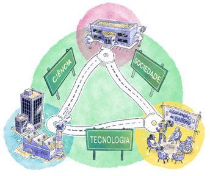

EPT emancipatória
Pensando as relações entre Estado e escola e o papel desta, fica uma dúvida: por que a escola pública é citada como “aparelho privado” se é uma instituição do Estado?
A aparente contradição reside no fato que, apesar de serem instituídas e mantidas pelo Estado, as escolas públicas operam dentro do contexto da sociedade civil e da reprodução de ideologias, contribuindo para a formação de consensos e a legitimação de valores que geralmente refletem a hegemonia de determinadas classes sociais. Logo, ao transmitirem determinados conteúdos e valores culturais por meio de currículos e práticas pedagógicas específicas, desempenham um papel fundamental na perpetuação da ideologia dominante e na reprodução das relações de dominação, ou seja, cumprindo um papel privado, mesmo que a escola seja pública.
Para isso, é importante considerar as relações de ciência, tecnologia e sociedade no processo educativo e fora dele. Ciência como fonte principal de conhecimento; tecnologia como a ciência humana que aplica os princípios científicos para resolver um problema humano e sociedade, que incorpora os conhecimentos das ciências humanas e das diversas linguagens – incluindo a corporal e a simbólica – e nos lembra da inexistência de ciência e/ou tecnologia neutras. Ao contrário, elas sempre devem estar a serviço de um projeto social e um projeto ético. Em outras palavras, não podemos imaginar uma formação integral com a exclusão da dimensão social no processo formativo.
Por outro lado, se a escola pública se conecta com as forças sociais não hegemônicas do território (por exemplo, movimentos sociais, sindicatos e outras organizações), ela também pode ser um espaço de luta pela hegemonia, onde diferentes grupos sociais apresentam conteúdos e valores alternativos. Uma Educação Profissional emancipatória que tem o trabalho como princípio educativo, ou seja, como ponto de partida e também como ponto de chegada, pressupõe-se práticas pedagógicas que ajudam a compreender o conjunto dos processos relativos ao trabalho, suas relações com a educação e com o próprio território.

Título: Mapa do território
Fonte: Prosa (2024k)
Visto isso, quais são as características de uma Educação Profissional verdadeiramente emancipatória, ou seja, que atende aos interesses dos educandos e da maioria da população?
O acúmulo das décadas de debates aponta para uma educação pública, gratuita, integral, laica, socialmente referenciada, de qualidade, inclusiva e que acolha a diversidade, que tenha a primazia e protagonismo da escola pública, bem como a exclusividade dos recursos públicos a ela destinados. Além disso, um dos aspectos mais importantes para que se construa uma educação emancipatória é a sua não submissão aos interesses imediatos do mercado, mas sim a luta pelo desenvolvimento socioeconômico e ambiental, vinculado à soberania e à justiça social.
Agora, tendo como recorte a perspectiva da Educação Profissional Tecnológica (EPT), além dos tópicos supracitados, são de extrema importância outros fatores, como:
- A vinculação com o desenvolvimento sócio econômico ambiental do território;
- O direito inalienável à educação e ao trabalho;
- A indissociabilidade da relação entre educação básica e profissional;
- O trabalho como princípio educativo;
- A inter-relação entre ciência, tecnologia e sociedade;
- A pesquisa, a produção de tecnologias sociais e a intervenção social como princípios pedagógicos;
- A educação integral, da pessoa humana, do trabalhador e do cidadão;
- A garantia do prosseguimento de estudos (inclusive via verticalização, que significa a continuidade de um estudante do nível técnico (por exemplo, de Eletrônica), para o nível superior da mesma área (nesse caso, Engenharia Elétrica ou Tecnólogo em Automação Industrial);
- O reconhecimento social dos conhecimentos e saberes adquiridos na vida e no trabalho.
Muitos destes princípios foram inseridos por meio de muita luta nas leis e normativas, mas, na prática, ou não se concretizaram ou o foram precariamente .

Título: O trabalho como princípio educativo
Fonte: Prosa (2024l).
As políticas públicas, em geral e as de educação, elaboradas e implantadas a partir da redemocratização, no fim da década de 1980 e da reforma do Estado brasileiro nas décadas posteriores, estão incompletas e fragmentadas, sendo outras sucessivamente acrescidas e retiradas, não permitindo a sua consolidação. Além disso, sofreram (e ainda sofrem) a influência de entidades supraestatais e multilaterais (ONU, FMI etc.) e não governamentais (fundações e institutos), com poder de influir em agendas e opiniões públicas .
Para que possamos pensar políticas de Estado que sejam permanentes, e não de governo, com “prazo de validade”, é necessário compreender os fundamentos e o contexto de sua elaboração, bem como a relação com práticas anteriores, buscando o conhecimento (e em quem produz estes conhecimentos) onde quer que ele esteja: pesquisas científicas, sistematizações das práticas e nos relatos dos sujeitos sociais envolvidos – em particular, aqueles que pretendemos diretamente beneficiar.
Para refletir: A EPT no seu dia a dia
Na linguagem corriqueira, os cursos e ações do âmbito da EPT são chamados pela mídia, gestores públicos, população em geral e até por colegas, de “ensino profissionalizante”.
- Você sabe a diferença entre os dois termos?
- Podemos utilizá-los como sinônimos?
- Que concepções estão por trás de cada um dos termos?
Quais termos utilizados nos documentos de políticas públicas de EPT você não está familiarizado? Faça uma lista e pesquise o(s) significado(s) e, se for o caso, as contradições entre eles.
Neste momento proposto para reflexão, assim como nos próximos que virão, sugerimos que você elabore um parágrafo curto e registre no seu Memorial e/ou siga as orientações do seu tutor!